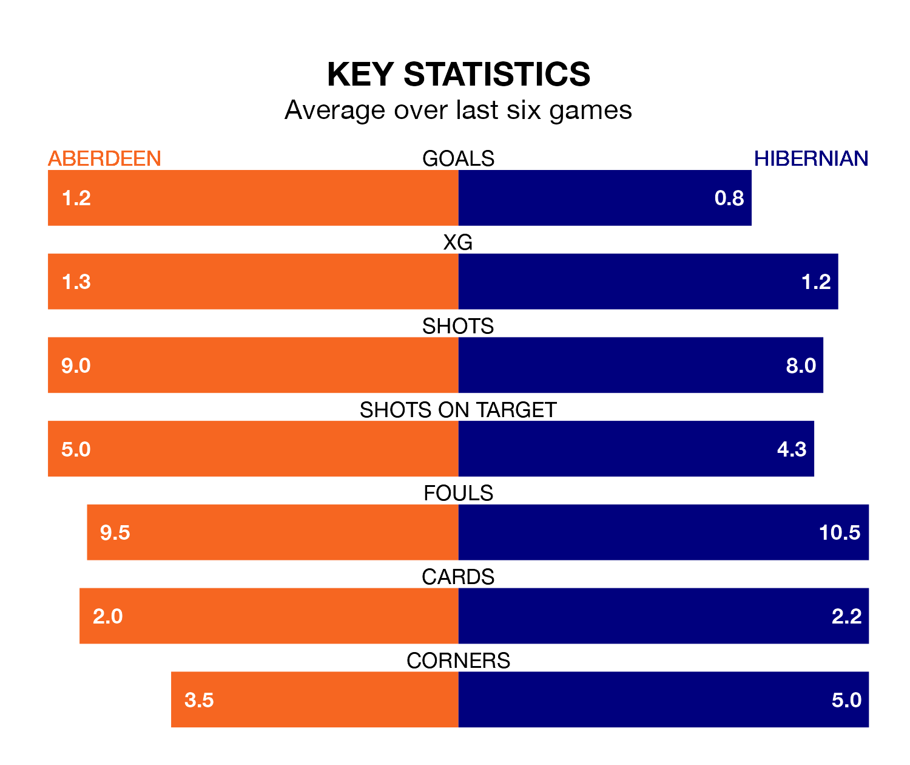

Aberdeen and Hibernian both come into Saturday's kick-off at the Pittodrie Stadium in poor form, having picked up four and two points respectively in their last six games.
Aberdeen have drawn four and lost two of the last six, while Hibs have taken two draws and four losses.
In Bojan Miovski, Aberdeen have one of the league's most on-form strikers so far this season. He has notched 13 goals in 24 appearances, to sit second in the scoring charts.
His goal rate of one every 159 minutes is much quicker than that of Elie Youan, Hibernian's top scorer with a goal every 424 minutes, and a total of four goals in 23 games.
In the last 10 years, Aberdeen and Hibernian have played each other on 28 occasions. Aberdeen won 13 of them, Hibernian nine, and they drew six times.
On average, Aberdeen scored 1.1 goals and Hibs 1.1 in those matches.
Their last meeting was on December 3, when Hibernian won 2-0 at home.
With 29 goals in 24 games so far this season, the hosts are scoring at below the league average rate with 1.2 goals per game. And they are conceding more than average, letting in 39 goals at a rate of 1.6 per game.
Hibs are also below average scorers, with 1.2 goals per game, compared to a league average of 1.3. They have conceded 1.6 goals per game.
The away side are ninth in the table after 24 games, of which they have won six and drawn eight, earning 26 points.
Aberdeen are one place ahead of Hibernian in eighth, with six wins and eight draws putting them on the same number of points.
Aberdeen's last match was on Wednesday, a 3-3 draw against Motherwell, with Luis Henrique Barros Lopes (two) and Stefan Gartenmann getting the goals for Aberdeen.
Hibernian lost 2-1 against Celtic last time out, on February 7, with Dylan Levitt on the scoresheet.
Saturday's match will be refereed by David Munro, who has taken charge of 10 Premiership games so far this season, issuing three red cards and booking 35 players. He has awarded three penalties.
The last Aberdeen game Munro refereed was a 0-0 home draw with St. Johnstone on October 8. His last Hibernian match was their 2-0 win away at Aberdeen on September 3.
Updated: 13:04 (UTC), 16/02/24